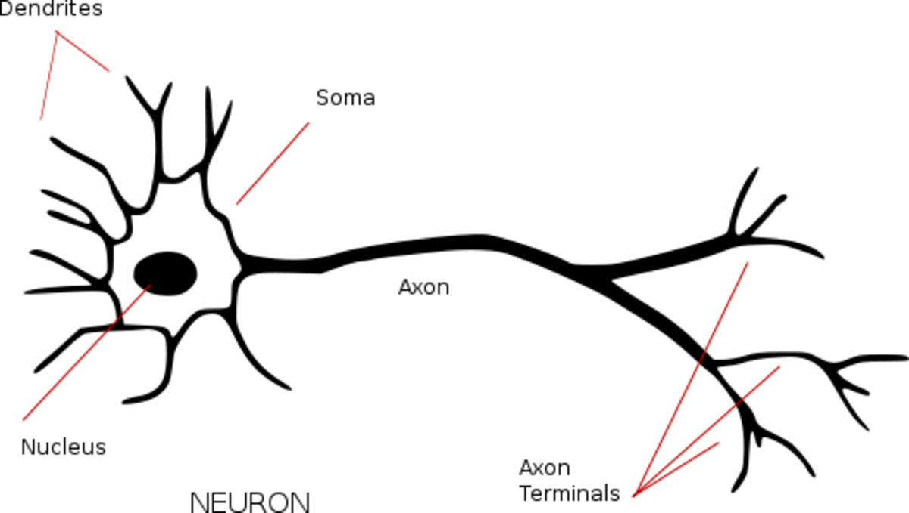

Neurons for Computer Geeks: Part I - A Neuron From Up On High
Monday, August 31, 2015
As any computer geek would tell you, computer science is great in and of itself and many of us could live long and contented lives inside that box. But things certainly tend to become interesting when there is a whole problem domain to model, and doubly so when that domain is outside of our comfort zone. As it happens, I have managed to step outside said zone - rather, quite far outside - so it seemed like a good idea to chronicle these adventures here.
The journey we are about to embark starts with a deceptively simple mission: to understand how one can use computers to model neurons. The intended audience of these posts is anyone who loves coding but has no idea about electricity, circuits, cells and so on - basically someone very much like me. We shall try to explain, at least to a degree, all of the required core concepts in order to start coding. As it turns out, there are quite a few.
But hey, as they say, "If you can't explain something to a six year-old, you really don't understand it yourself". So lets see if I got it or not.
I'm a Cell, Get Me Out Of Here!
A neuron is a cell, so it makes sense to start with cells. Cells are a basic building block in biology and can be considered as the smallest unit of a living organism - at least for our purposes, if nothing else. The key idea behind a cell is as obvious as you'd like: there is the inside, the outside, and the thing that separates both.
Of course, this being biology, we need to give it complicated names. Accordingly, the inside of the cell is the cytoplasm and the thing that separates the cell from the outside world is the membrane. You can think of it as a tiny roundy-box-like thing, with some gooey stuff inside. The material of the box is the membrane. The gooey stuff is the cytoplasm. When we start describing the different cellular structures - as we are doing here - we are talking about the cell's morphology.
Living beings are made up of many, many cells - according to some estimates, a human body would have several trillion - and cells themselves come in many, many kinds. Fortunately, we are interested in just one kind: the neuron.
The Neuron Cell
The neuron is a nerve cell. Of course, there are many, many kinds of neurons - nature just seems to love complexity - but they all share things in common, and those things define their neuron-ness.
Unlike the "typical" cell we described above (i.e. "roundy-box-like thing"), the neuron is more like a roundy-box-like thing with some branches coming out of it. The box-like thing is the cell body and is called soma. There are two types of branches: axons and dendrites. A dendrite tends to be short, and it branches like a tree with a very small trunk. The axon tends to be long and it also branches off like a tree, but with a very long trunk. As we said, there are many kinds of neurons, but a fair generalisation is that they tend to have few axons (one or maybe a couple) and many dendrites (in the thousands).

Figure 1: Model of a neuron cell. Source: What is a Neuron?
This very basic morphology is already sufficient to allows to start to think of a neuron as a "computing device" - a strange kind of device where the dendrites provide inputs and the axon outputs. The neuron receives all these inputs, performs some kind of computation over them, and produces an output.
The next logical question for a computer scientist is, then: "where do the outputs come from and where do they go?". Imagining an idealised neuron, the dendrites would be "connecting" to other dendrites or to axons. At this juncture (pun not intended), we need to expand on what exactly these "connections" are. In truth, its not that the axon binds directly to the dendrite; there is always a gap between them. But this gap is a special kind of gap, first because it is a very small gap and second because it is one over which things can travel, from the axon into the dendrite. This kind of connectivity between neurons is called a synapse.
From this it is an easy leap to imagine that these sets of neurons connected to other neurons begin to form "networks" of connectivity, and these networks will also have computational-device-like properties, just like a neuron. These are called neural networks. Our brain happens to be one of these "neural networks", and a pretty large one at that: it can have as many as 80-100 billion neurons, connected over some 1 quadrillion synapses. In these days of financial billions and trillions, it is easy to be fooled into thinking 100 billion is not a very large number, so to get a sense of perspective lets compare it to another large network. The biggest and fastest growing human-made network is the Internet, estimated to have some 5 billion connected devices but less than 600k connections in its core - and yet we are already creacking at the seams.
The Need To Go Lower
Alas, we must dig deeper before we start to understand how these things behave in groups. Our skimpy first pass at the neuron morphology left a lot of details out, which are required to understand how they behave. As we explained, neurons have axons and dendrites, and these are responsible for hooking them together. However, what is interesting is what they talk about once they are hooked.
A neuron is can be thought of as an electrical device, and much of its power (sorry!) stems from this. In general, as computer scientists, we don't like to get too close to the physical messiness of the world of hardware; we deem it sufficient to understand some high-level properties, but rarely do we want to concern ourselves with transistors or even - regrettably - registers or pipelines in the CPU. With neurons, we can't get away with it. We need to understand the hardware - or better, the wetware - and for that we have to go very low-level.
We started off by saying cells have a membrane that separates the outside world from the cytoplasm. That was a tad of an oversimplification; after all, if the membrane did not allow anything in, how would the cell continue to exist - or even come about in the first place? In practice these membranes are permeable - or to be precise, semi-permeable. This just means that it allows some stuff in and some stuff out, under controlled circumstances. This is how a cell gets energy in to do its thing and how it expels its unwanted content out. Once things started to move in and out selectively, something very interesting can start to happen: the build up of "electric potential". However, rather unfortunately, in order to understand what we mean by this, we need to cover the fundamentals of electricity.
Onward and downwards we march. Stay tuned for Part II.
| Back to chapter index. | Forward to next chapter |